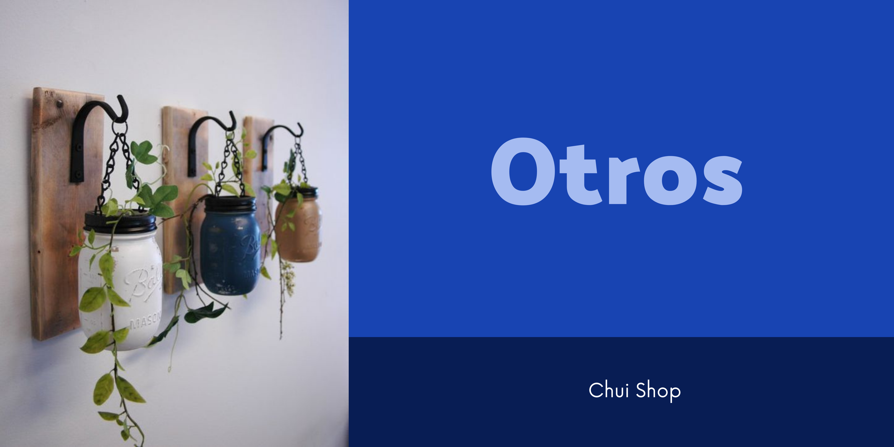

Otros
Manualidades y Objetos Únicos
Manualidades
Las manualidades son hechos con mucho detalle y cariño, para que puedas recibir en buenas condiciones tu pedido
Todo el material que usamos es el mejor y el adecuado para tu pedido. Tenemos mucha variedad de manualidades
Objetos Únicos
Vendemos cosas únicas, que solo estan ya sea por temporada o ¡solo una vez!. Estos objetos son de buena calidad y especiales.
Pueden ser muchas cosas, todos los objetos estarán subido en nuestras redes sociales, ¡asi que te esperamos!
